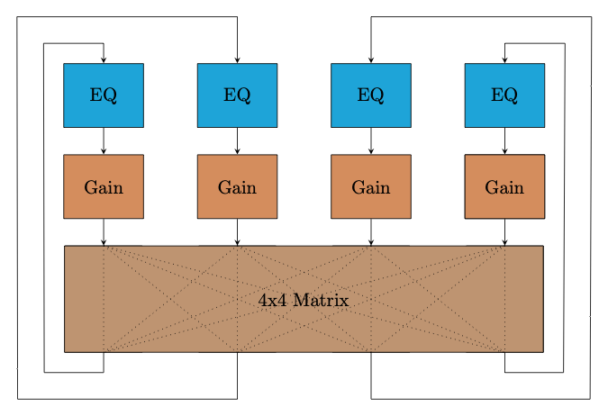

Interacting with Feedback
4: No Input Mixing Desk
A digital recreation of a 4 channel feedback mixer with the channels able to feed into each other. This is a very crude approximation without the real richness of an analog mixer, but it gives a sense of what interacting with this kind of setup can feel like.
Example presets:
CHANNEL 1
CHANNEL 2
CHANNEL 3
CHANNEL 4
Noise in the system
Diagram
